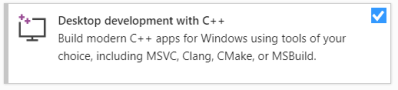
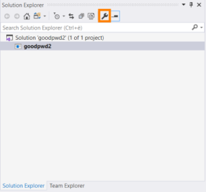
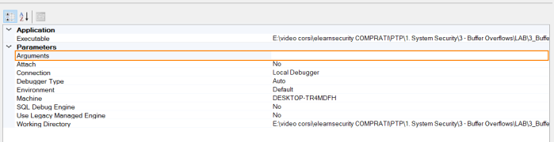

Microsoft Visual Studio C/C++
Installation
Download the Community edition of Visual Studio:
https://visualstudio.microsoft.com/thank-you-downloading-visual-studio/?sku=CommunityFor
Windows development application and debugging in C/C++ select the below workload:
Desktop development with
C++

Open application
File → New →
Project 1. Blank Solution →
Next2. Solution Name - Location - Solution →
Create3. drag the .exe file that we want to debug inside Visual
Studio
Pass arguments to the application
